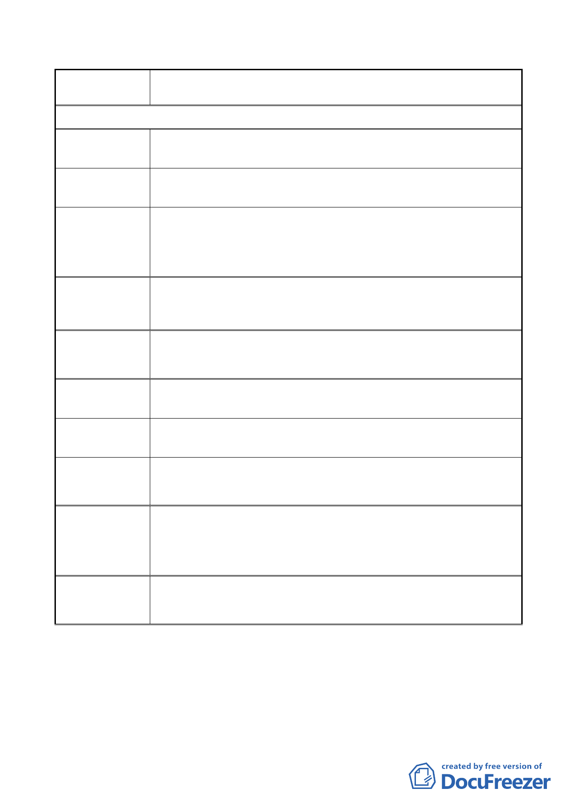

案名
變更臺北市內湖區石潭段四小段 280、281、281-1 地號等三筆
土地國中、國小用地為體育場用地及道路用地主要計畫案
署期 101.5.29. 第一次陳情
陳情地點 1 建議案（一）內湖區石潭段四小段 280.281.281-1.地號
改善體育場用地週邊交通。
陳情理由
建議辦法
市府回應說明
民權東路 6 段 206 巷至 210 巷〈體育場用地北側基地退縮〉，請
拓寬為路寬 40 米以上道路，以利大型接駁車及公車停靠上下
客，可減少民權東路 6 段主幹道車流擁塞〈民權東路 6 段西往
東左轉 191 巷，尖峰時段車流輛多〉
為因應計畫區及周邊地區交通需求及路網完整性，案經交通相
關單位評估及建議，計畫拓寬計畫區西側道路為 17 公尺，計畫
區東側道路為 11 公尺，應可因應大型賽事衍生之人潮及車潮。
委員會
決議
同編號 1 陳情意見委員會決議。
陳情地點 2
陳情理由
建議案（二）內湖區石潭段四小段 280.281.281-1.地號
改善體育場用地週邊交通。
建議辦法
基地內設置東西向平面人行穿越道，請與民權東路 6 段 190 巷
35 弄與 206 巷交叉口紅綠燈及行人穿越線銜接。
市府回應說明
因網球場的配置涉及陽光照射方向（故方向須一致性，維持南
北向配置）、比賽選手的公平性、在室外球場間配置活動看臺及
考量基地內交通內部化等因素，本建議內容將轉知由後續設計
廠商納入設計考量範圍。
委員會
決議
同編號 1 陳情意見委員會決議。
- 27 -